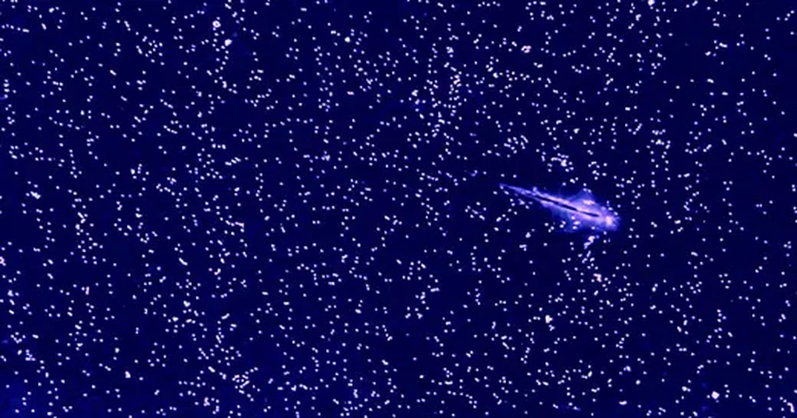

Морские обезьяны показывают ученым, как переписать правило турбулентности
Ученые предположили, что в турбулентной системе энергия течет только в одном направлении.
Чего они не знали, пока не присмотрелись к рассольным креветкам, так это того, что простой фактор может обратить вспять поток.
Пост Sea Monkeys Show Scientists How To Rewrite a Rule of Turbulence впервые появился в журнале Quanta